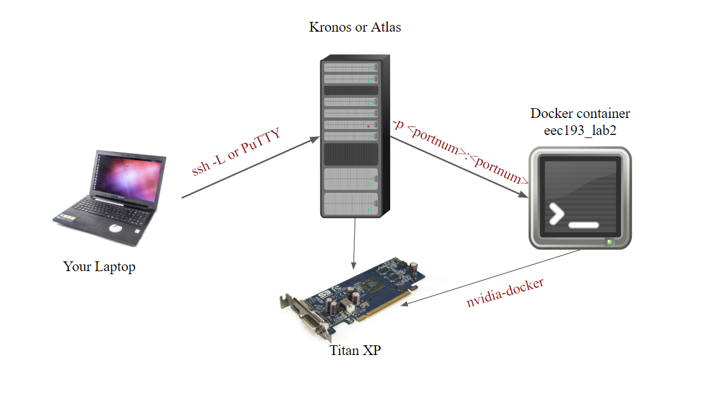

In this project, you will work individually to develop a fully functional vehicle detection neural network using the Pytorch framework. Although the industry standard for deep learning frameworks is arguably Tensorflow, Pytorch provides a user-friendly interface that allows programmers to focus on developing machine learning models rather than understanding computational graphs. We will use Pytorch exclusively here-on-out. API calls and documentation regarding this framework can all be found at https://pytorch.org/docs/0.4.0/. Unlike Lab 1, where most API calls were given in the instructions, you will have to use the Pytorch documentation to search up different neural network layers, how to interact with them, how to preprocess images, how to call different neural network optimizers and so on. The reason behind this: we want you to gain more experience as a machine learning developer, who can utilize machine learning frameworks with ease, creating new neural network models in a short period of time.
With respect to Self-driving cars, Lab 1 introduces a "Traditional Computer Vision" approach to detect lane lines. Lane lines are relatively simple and mathematically well-defined (with thresholding and peak-finding). On the other hand, vehicles are much more complex images and cannot be rigorously defined with operations that you encounter in lab 1 (windowing, pixel-saturating, peak-summing, etc...). Therefore, a "Deep Computer Vision" approach is needed.
This lab is developed by Sam Truong. Contact him through Slack if you need clarifications. There will be some questions along with the lab, you can write them in a separate pdf and submit it with your Jupyter notebooks. These questions will help you prepare for the interactive grading session. Feel free to ask the TAs if you do not understand the questions.
Like Lab 1, your environment will be provided to you via docker. You will need to create your container from the eec193_lab2 docker image which is already on the two GPU servers dedicated to this course: atlas.ece.ucdavis.edu and kronos.ece.ucdavis.edu. It is highly recommended that you use the servers for this lab, because training the neural models can be sped up immensely using the GPUs. You can train it on your own laptop with CPU, or if you have a Nvidia GPU at home. A Dockerfile is provided if you would like to take this option. You may also make your own image with all the dependencies necessary for the lab, however it is recommended to stick with the TA provided resources.
This lab is developed in Python using jupyter notebook, a great IDE that allows you to interactively run Python scripts on your browser. No X11-forwarding or extra steps are needed to run jupyter notebook on kronos and atlas.
SSH into the machines using the following commands:
If you are on MacOS or Linux
# for atlas.ece.ucdavis.edu
ssh -L <port num>:localhost:<port num> kerberos_id@kronos.ece.ucdavis.edu
# for kronos.ece.ucdavis.edu
ssh -L <port num>:localhost:<port num> kerberos_id@kronos.ece.ucdavis.edu
If you are on Windows:
Use PuTTY to connect to the machines like lab 1. Then, under SSH/Tunnels, specify the source port as <port num> and destination port as localhost:<port num>. Then, click Add and Open
As you may notice, there are extra steps to connect to the server unlike Lab 1. What the previous setups do is bind your local machine port (your laptop), with the servers' port (kronos or atlas). This way, visualization data for jupyter notebook can be passed from the server to your local machine, and you can use your local machine browser to interactively program on the server. If vim is not your forte, jupyter notebook can help you program with ease. In industry, where you are likely to share your GPU resources with other colleagues on a remote server, it is important that you know how to perform this setup phase. This setup is called "port binding", and it can be explained with the following diagram:

The previous port binding phase creates a pipeline between your laptop and the server, granting you direct access to the GPUs, since they are physically connected to the server. However, because we are going to develop our code inside a docker container, which for all purposes might as well be its own machine, there needs to be a connection between the host server (kronos or atlas) with your lab 2 container. We can make this pipeline when creating the container:
nvidia-docker create -it --name <last_name>_lab2 -p <port num>:<port num> eec193_lab2 /bin/bash
The -p flag bind the a port on the server with a port on our container. By now, you have established a link between your laptop and the container. To launch the container, do nvidia-docker start <your container> and nvidia-docker attach <your container>. The reason why you should use nvidia-docker instead of just docker is because nvidia-docker allow you to access the GPU on the host while being inside the container.
For <port num>, theoretically you can choose any number above 8000, as long as it is unused. We suggest you keep all your <port num> the same for all sources and destinations, as it is easier to keep track of. Because a port has to be unique, if your classmates are already using a port, you cannot use it anymore. To alleviate this issue we have create port assignments for everyone in the class.
Question: Why are there always 2 <port num> for each port binding command?
Question: Why do we use port 8000 and above?
Once you are inside your container, go to the folder that you put lab 2 source code in and run
jupyter notebook --no-browser --ip=0.0.0.0 --allow-root --port=<port num>
After this, you can go to your browser on your laptop and go to localhost:<port num>. There you should see the directory that contains your Lab 2 source code on your remote container. You can start interactive sessions in Python from there. If you are asked for a token check the output on your terminal when you ran jupyter notebook on the remote server.
Question: Why do we specify --no-browser when clearly we want to run the interactive python session on your laptop?
Question: What is --ip=0.0.0.0 flag means?
You can safely skip this section if you are not using the remote server. Because there will be 5 of you on each machine, this is how we are going to share the GPU: anytime you want to debug your code, do not turn on any GPU options in Pytorch (will be specified in following section). You can run your script inside your container all you want if you are not using the GPU. If you think your code is ready to be trained on GPU, turn on GPU options, then exit the container. Once you are on the host server, you can run your GPU-enabled code with
ts nvidia-docker exec -it <your container> python3 <the file you want to run>
Because a training session can take from minutes to several hours, the ts task scheduler command allows you to queue up your execution, in case somebody else is using the GPU. Knowing these features will allow you to efficiently share resources, not for just this lab, but also later on. Some good ts commands:
#removes a job from the queue
ts -r <job id>
#kill an active job
ts -k
#prioritize a job
ts -u <job id>
Just type in ts to display all tasks in the queue. The reason why you have to run this command outside of your container is because your container does not know anything outside of itself. It is unaware of other processes, and thus you have to manage these task scheduling steps on the host machine.
At this point, you should know how to setup your environment and work collaboratively with others on a machine learning project. People who want to do machine learning projects often experience huge setbacks just because they do not know how to use their compute resources and can't train their networks effectively. From here on, you should know how to establish a workflow on any server with port binding, docker and task scheduling, not just kronos and atlas, but also public services like Amazon AWS or Google Cloud. If you still feel confused about setting up a work environment please ask the TAs for help.
This is the high level overview of the tasks you will complete for this lab:
Phase 1: MNIST Dataset [70 points]
Phase 2: UIUC Vehicle Dataset [30 points]
Phase 3: Interactive Grading [20 points] + Report [10 points]
The max score for this lab is 130 points.
The reason we use the MNIST hand written digit dataset for this phase is because the complexity of the data is very low, so training can be very fast, allowing you to experiment with more models. The purpose of this phase is to get you acquainted with the Training in a Deep Learning workflow.
In this part you will be installing Pytorch in your container through Anaconda. Anaconda is a Python distribution that manages dependencies on your system. We want you to get exposed to how dependency installations work, and Anaconda is a very beginner friendly introduction to do so. To learn more https://www.anaconda.com/distribution/. To install Pytorch, do
# install pytorch core
conda install -c soumith pytorch
# install torch vision, this is needed if you want to do computer vision tasks
conda install -c pytorch torchvision
Question: How do you quickly verify that the dependencies are met?
Question: What is the -c flag in conda?
The Pytorch Dataset class is an important attribute needed prior to training. This class allows you to treat the entire dataset as an object, on which you can perform operations such as image processing or dataset partitioning. The dataset.ipynb file contain a class called MNISTDataSet which is a child class of the torch.utils.data.dataset module. Your job is to overwrite the parent class to tailor the dataset class to the MNIST dataset. There are 3 internal functions that you need to overwrite: __init__, __getitem__. __len__.
__init__ function initializes or constructs your class, here you should pass in a string that tells the class where it can import the MNIST data. you should use the self python class object to save the string to the class instance (i.e self.datapath = ...). Your class should also accept a transform handler. If the handler is not None, it will process the data whenever __getitem__ is called. The data is located at .data/processed/training.pt. The .pt file is a Pytorch extension that allows you to save multiple arrays of different sizes. The training.pt, when imported, returns a tuple of (images, labels). The __init__ functions should extract the images and labels out of this file given the path.
__getitem__ returns a pair of (image, label) based on the supplied index. It also should perform the transformation specified in __init__ before returning the image/label pair.
__len__ simply return the length of the dataset.
These 3 internal functions are used by the torch.utils.data.DataLoader module. It uses __getitem__ to return a batch of images and labels. __len__ is used primarily for dataset-long operations like dataset shuffling (randomize order of data). It is also used to iteratively get data points from the training set to train the model (as a for loop).
Like the Dataset class, you will overwrite the Pytorch nn.Module class. You will find the template of this class in model.ipynb This parent class contain basic operations for neural network model, it knows how to handle both forward and backward propagation. It knows how to handle different batch sizes and utilize the GPU. There are 2 functions you need to overwrite: __init__ and forward.
The __init__ function is where you will declare your layers, based on the architecture.
The forward function is where you will connect the layers together. Pytorch makes it really easy to do this:
forward(input):
x1 = layer1(input)
x2 = layer2(x1)
output = layer3(x2)
return output
For the 2-layer architecture, you need to implement:
Layer 1: Convolutional, input channel = 1, output channel = 20, kernel size = 3, step size = 1
Layer 2: Fully connected, input dimension = 20 input dimension = <you find out>, output dimension = 10
Question: Can we change the output channel of Layer 1? Why or why not?
Question: Can we change the output channel of Layer 2 to be something other than 10 without changing anything else? Why or why not?
Question: What is the common variable between Layer 1 and 2 (what has to be the same)? Why?
Question: Do you need Softmax at the output of Layer 2? Why or why not?
Question Mathematically, what is a fully connected layer?
Question: You will likely need to use a vectorize function to turn the output tensor of Layer 1 into a vector, before inputting into Layer 2. Which function do you use? Why do you need to vectorize the tensor?
Question Why do you need to instantiate the layers in __init__ then use them in forward? Can we instantiate the layers directly in forward? What would be the consequence of that? Hint: Ask your self where the weights of each layers are saved through out the training phase?
Now that we have defined the Dataset and model, we can train the neural network. The train.ipynb should give you a basic template to train. Notice that because we cannot import functions from other Jupyter notebooks, you need to create a dataset.py file and model.py file and copy-paste your solution to the previous notebook there. Essentially, the notebooks allow you to interactively run your code, to actually turn your code into callable files, you still need to make the .py. We will use the CrosEntropyLoss() to calculate the error for back propagation. Use Stochastic Gradient Descent as your optimizer. Use learning rate = 0.01 and batchsize = 8
Question: You will likely need to use torch.autograd.Variable, where do you use it and what does it do?
Question: How many images are we training per iteration?
Question: How do you save the weights after training?
Question: What learning rate do you use to train the model? What happens if you decrease the learning rate? What happens if you increase the learning rate? Hint: Look at how the cost function for a 1 parameter model is affected by varying step size and try to generalize your thoughts to models with larger amounts of parameters.
Question: How do you plot the learning curve? Try setting the learning rate to be very high then rerun the training process for a few window, what does the learning curve look like?
Question: Try setting the learning rate to be very low, then rerun the training process for a few window, what does the learning curve look like?
Question: What are the advantages/disadvantages of setting learning curves high/low?
Question: How do you know when to stop the training process?
In practice, you should save your weight once in a while as checkpoint, just in case your system crashes. Save your weights every window.
Question: Besides acting as a backup, saving weights can help you "go back in time". When is this necessary? Hint It has to do with resetting the hyperparameters (e.i decreasing learning rate, etc.)
The template does not provide the source code for testing the accuracy. However, the testing phase is almost identical to the training phase (just without the back propagation and loss calculation). Your job is to write a function that calculates the percentage accuracy of the current model. Use the ./data/processed/test.pt file to instantiate your test Dataset.
Similar to the 2-Layer model, make a new class in model.ipynb. The architecture for this model is:
Layer 1: Convolutional, input channel = 1, output channel = 32, kernel size = 5, stride = 1, padding = 2
Layer 2: Pooling, kernel size = 2, stride = 2
Layer 3: Convolutional, input channel = <you find out> , output channel = 64, kernel size = 5, stride = 1 padding = 2
Layer 4: Fully connected, input channel = <you find out>, output channel = 1024
Layer 5: Fully connected, input channel = <you find out>, output channel = 10
Question: Why do we have 2 a fully connected layer at the end of the model? Can't we do the same thing with 1 fully connected layer? Why or why not?
Question: What does the pooling layer do?
Question: You may need to use a ReLu activation function after every convolutional layer and before every pooling layer. What is the intuition behind this?
Similar to the 2-Layer model, train the model with Adam optimizer instead of Stochastic Gradient Descent. Make batch size = 16 (doubled) and learning rate = 0.01 (a tenth).
Question How long does it take to train one iteration? Is it taking a longer or shorter amount of time? If so, why?
Question What does the learning curve look like?
Question 2 hyperparameters that we changed compared to 2-Layer are learning rate and batch size. How do these parameters affect training time and final accuracy?
Compare your final accuracy with that of the 2-Layer model.
Question Which one is better? Why?
Question Setting the learning curves for both model side by side, which one converges to a minimum faster? Which has a lower final loss?
Question Is it possible for one model to have a lower minimum loss during training and lower test accuracy? Why or why not?
The purpose of this part is to see if your intuition behind how to improve neural networks is valid. By contrasting a 2-Layer and 5-Layer model, you should be able to see what makes a neural network robust. You can modify the 5-Layer model, or build a new model specified in a research paper like Alexnet or Resnet. Write a small report that includes the following:
It is recommended to modify the model architectures given to you. The emphasis of this lab is to develop the intuition necessary to see how changing different hyperparameters affects model accuracy. The students who iterate faster through different models will have more data, giving them more to talk about in their reports. The objective is not to get the best model accuracy, but to have the best intuition as to how to tune hyperparameters to increase model accuracy. As some first actions you should take, you can add or remove a convolution/fc layer and see how model performance changes. Then once you've played with each layer you can play with different batch sizes, optimizers, and learning rates. The key here is iterating quickly through your changes to build the intuition necessary to architect neural networks.
See lab 2 phase 2 zip for more info. It is very straight forward and need not much instructions. Teja developed this phase. Contact him on Slack if you need any help. Good luck!